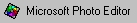A Microsoft Photo Editor grafikai segédprogram leírása
CROP/LEVÁGÁS
Nézzük, hogy elsõsorban milyen feladatokra használhatjuk a programot. Sokszor elõfordul, hogy az adott képen felesleges részletek is vannak, amit mi el szeretnénk hagyni. Ezt a programban a Crop funkcióval valósíthatjuk meg.
Pl.
| 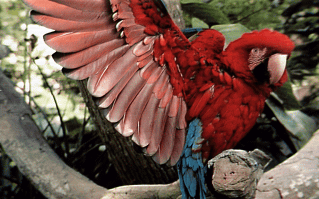 | 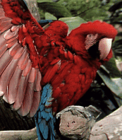 |
Lépések
Töltsük be a képet
Jelöljük ki a képen azt a területet, amit meg szeretnénk hagyni. 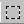
Válasszuk ki a Image/Crop menüpontot
Nyomjuk meg az OK billentyût
RESIZE / ÁTMÉRETEZÉS
Gyakori probléma, hogy a kép túl kicsi, vagy túl nagy, ekkor vagy nagyítanunk, vagy kicsinyítenünk kell.
Lépései:
Töltsük be a képet
Válasszuk ki az Image/Resize menüpontot
| 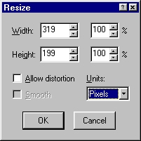 | A width (szélesség) sorban megadhatjuk a kép szélességét, vagy azt, hogy az új kép szélessége az eredetinek hány százaléka legyen. A height (magasság) sorban megadhatjuk a kép magasságát, vagy azt, hogy az új kép magassága az eredetinek hány százaléka legyen. Az allow distorsion (torzulás engedélyezett) kapcsoló bekapcsolásakor a szélesség/magasság arány megváltoztatható, de ekkor a kép torzulni fog. (pl. megadhatjuk azt, hogy a szélesség 150 % legyen, a magasság pedig 75%. Kikapcsolt állapotában csak az eredeti arányok megtartásával lehet a kép dimenzióit megváltoztatni.) Az Units (egység) részben adhatjuk meg, hogy a szélesség/magasság adatok milyen mértékegységre vonatkozzanak (cm, inch, képpont) |
Nyomjuk meg az OK billentyût
pl. arányos kicsinyítés
Torzult kicsinyítés
| 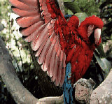 |
Gyakorta van szükség arra, hogy a kép egy adott színét átlátszóvá tegyük, vagyis ezen szín helyén a böngészõ a háttéret jelenítse meg. Erre a következõ ikon szolgál.
| 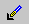 | A kép adott színének átlátszóvá tétele |
Lépései:
|
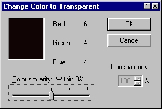 |
pl.
|
Elõfordulhat, hogy az adott képet, ami mondjuk 16.7 millió színárnyalatot tartalmaz, át akarjuk alakítani szürke árnyalatos képpé. Ezt a File/Properties menüpontban tehetjük meg a megfelelõ típus kiválasztásával.
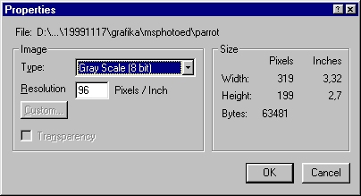
pl.
| 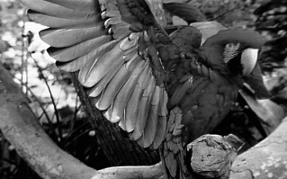 |
Lépései
|
 |
SMUDGE/ELMÁZOLÁS
Az elmázolás annyit jelent, hogy a kép egy adott részét szétkenhetjük, összemoshatjuk a kép többi részével. Ez a funkció a 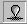 ikon megnyomásával érhetõ el, majd a kép adott területét az egér bal gombjának nyomvatartása mellett "maszatolhatjuk el." Arra is felhasználható, hogy a kép egy részét összemossuk a másikkal, mint ahogy az alábbi példa mutatja.
pl.
| 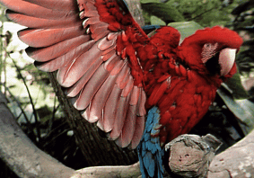 | 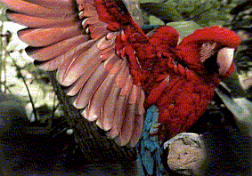 |
(Figyelem!!! Csak True Color képeken mûködik.)
VILÁGOSSÁG/KONTRASZT/GAMMA MEGVÁLTOZTATÁS
A kép világosságát, kontrasztját is módosíthatjuk. Erre az 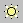 ikon, illetve az Image/Balance menüpont szolgál.
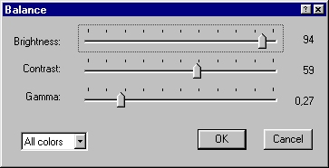
A fenti beállításokkal a következõ változtatást tudtuk elérni:
| 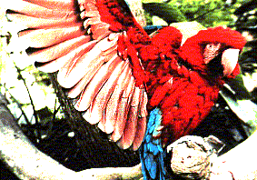 |